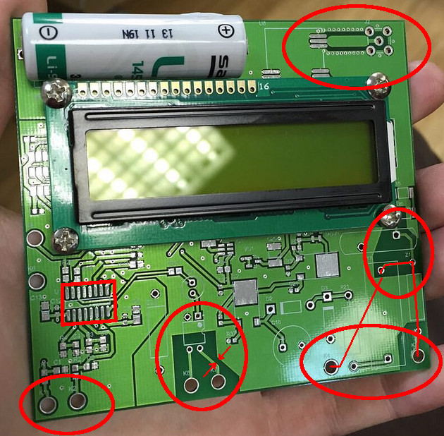
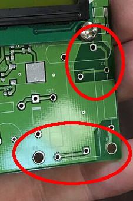
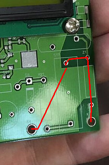
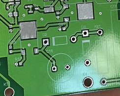
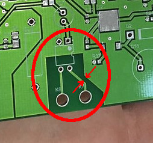
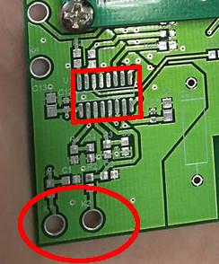
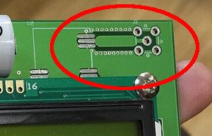

Вот люди электросчётчик сделали…
Одна компания, очень любящая публично рассказывать, что они полностью вертиально интегрированные, то есть, в переводе на русский, готовы поставить пользователю всё, что ему надо, так, что ему больше ни к кому ходить не приходится, а также что сотрудничество с производителями приборов учёта у них не задалось, а поэтому пришлось и их тоже самим делать и поставлять, выкладывает в официальный бложик фотографию своей разработки.
И это — прекрасная иллюстрация того, как выглядит в 9 из 10 случаев результат разработки электроники, проведённой, кгхм, взрощенными на ардуино, кгхм, специалистами.
Хотя компания не уточняет, что именно перед нами — перед нами, очевидно, электросчётчик с радиоинтерфейсом, предназначенным для дистанционного съёма данных. Форма платы подходящая, слева внизу стоит нечто до боли похожее на ADE7757 (микросхема для счётчиков энергии) с обвязкой в точности по даташиту, справа вверху — радиомодуль и антенна, между ними — экранчик.
А теперь пойдём по частям, чтобы посмотреть, почему это поделие, если оно заработает вообще, представляет явную и прямую опасность для здоровья и жизни его пользователей…

Наиболее интересные части обведены красным.

Это — конденсаторный блок питания, сделанный по почти типовой схеме (http://easyelectronics.ru/kondensatornoe-pitanie.html). В принципе, сама по себе идея использования конденсаторного блока — так себе, даже если в устройстве не нужна гальваническая развязка, лучше поставить импульсный блок на LNK304, MP100, MP103 и подобных контроллерах: это добавляет немного к цене, зато компактнее, не потребляет лишнюю реактивную мощность и не имеет некоторых неприятных эффектов.
Итак, в левую большую дырку приходит один провод сети, в правую — другой. Вторая линия проходит через предохранитель Z1 и идёт на гасящий конденсатор C17, высоковольтные импульсы помех «заземляются» через варистор MOV1, выше него стоят две неидентифицированных детали, обозначения рядом с которыми разобрать не удаётся.
Тот факт, что прямо вокруг ножек деталей, находящихся под полным напряжением сети, земляной полигон убран, говорит, что слово «пробой» автор платы в жизни слышал.

Однако если посмотреть на минимальный зазор между земляным полигоном, на котором висит один провод сети 230 В, и дорожкой, на который приходит через предохранитель второй провод сети, то он — примерно 1,5-2 мм. Согласно ГОСТ 23751-86, такой зазор соответствует допустимому напряжению 450-600 В — то есть, пока вроде в нормативы вписываемся, в этом месте ёбом не токнет.
Но у любого нормального разработчика возникает другой вопрос: а зачем вообще нужен земляной полигон под предохранителем и гасящим конденсатором? Чтобы что? У этих компонентов нет контакта с «землёй», нет экранированного корпуса — ровно наоборот, чем они дальше от земли, тем безопаснее. Под ними не надо считать зазоры в миллиметрах — под ними вообще не надо класть «землю», она там в лучшем случае абсолютно бессмысленна. То есть, любой нормальный разработчик вместо фигурных вырезов в «земле» вокруг ножек этих компонентов просто вообще убрал бы «землю» из этого угла от греха подальше.
Кроме того, C17 не зашунтирован резистором. То есть, если выключить счётчик из сети в удачный момент прохода напряжения через максимум — на конденсаторе будет больше 300 В, которыми вас весело щёлкнет, если дальше вы коснётесь рукой контактов счётчика. Полностью отключённого от сети счётчика. Чтобы такого не было — параллельно конденсаторам любой значимой ёмкости, которые оказываются под сетевым напряжениям, ставят резисторы сопротивлением от нескольких сотен килоом до 1-2 МОм, на которые конденсатор тихо и спокойно разряжается за секунды до безопасного напряжения.

Едем дальше. Тут уже становится весело. Этот кусок — выпрямитель и стабилизатор после конденсаторного блока питания. D2 и D3 — выпрямитель, потом выпрямленное сглаживается на C18 и подаётся на стабилизатор U2 (LM317 или аналогичный в корпусе TO263-3). Стабилизатор на 1,5 А явно избыточен — если бы схема потребляла хоть что-то отдалённо близкое к такому току, конденсаторным БП было бы не обойтись; судя по габаритам C17, здесь речь идёт о 30-40 мА максимум. С другой стороны, LM317 вообще нельзя использовать в цепях с потреблением меньше 10 мА, это для него минимальный ток, при котором гарантируются характеристики. Но шутка не в этом.
Особенность конденсаторного блока питания — в том, что на выходе он выдаёт не напряжение, а мощность. То есть, напряжение после конденсатора и выпрямителя зависит от тока нагрузки — чем меньше нагрузка, тем выше напряжение; в отсутствие нагрузки мы получим полные 300+ В выпрямленного сетевого напряжения. Поэтому всегда, я повторяю, всегда после выпрямителя в конденсаторном блоке ставят стабилитрон с мощностью рассеяния, сравнимой с мощностью, выдаваемой блоком. Потому что иначе, если почему-то нагрузка пропадёт — ёбнет.
Здесь стабилитрона не видно. То есть, если в результате чего-либо (например, банальной неисправности в электронике) нагрузка на блок питания почему-то упадёт — то его выходное напряжение вырастет пропорционально и прилетит на C18 и U2. LM317 рассчитана максимум на 57 В, C18 тоже стоит вряд ли более чем на 63 В — если напряжение превысит эти значения, одиночная мелкая неисправность превратится в вынос к чёртовой матери всей электроники счётчика.
Слабая надежда остаётся лишь на то, что стабилитрон будет стоять на месте D3.
Ну и да, на входе линейных стабилизаторов рекомендуется в параллель к алюминиевому конденсатору ставить керамический ёмкостью 0,1-1 мкФ — улучшает стабильность работы. Нет, без него тоже работает, как правило. Но ни один серьёзный разработчик просто не будет экономить те 0,2 цента, которые стоит керамический конденсатор 0,1 мкФ 50 В, ему в голову такое не придёт. Это обвязка, которая ставится рефлекторно.

А вот дальше начинается веселье. Это — импульсный выход счётчика; так как сам счётчик питается от БП без гальванической развязки, а импульсный выход идёт на внешний разъём — и там как раз очень даже может ёбнуть и пользователя, не говоря уж про систему дистанционного проводного учёта показания, то выход развязан оптроном U3, скорее всего — PC817 или аналог, пробивное напряжение 5 кВ.
Пять киловольт — это здорово, вот только левая дорожка от оптрона проходит менее чем в 2 мм (для масштаба: между соседними ножками оптрона 2,54 мм) от земляного полигона, на который, как мы помним, напрямую приходит один из проводов сети 230 В. То есть, прочность развязки падает примерно до 600 В.
В принципе, на этом можно заканчивать — ГОСТ требует от электросчётчика изоляции 6000 В. Требования самых мягких стандартов на электрическую прочность изоляции — и те не опускаются ниже 2 кВ пикового напряжения.
Говоря проще, этот импульсный выход использовать нельзя. Чтобы стало можно — необходимо заменить оптрон на ещё более высоковольтный (7,5 кВ), убрать вокруг него всю землю, а под корпусом оптрона сделать поперечный вырез в плате, потому что пробивное напряжение по поверхности платы, особенно если на ней со временем осядет грязь, в разы ниже, чем по воздуху.

Следующая красота — это левый нижний угол, в котором стоит собственно микросхема счётчика, ADE7757. Две дырки внизу — это провода от токоизмерительного шунта. В счётчиках используют именно шунты, так как дёшево, практично, не имеет никакой заметной без микроскопа частотной зависимости — в отличие от токового трансформатора. Минус шунта очевиден — у него нет гальванической развязки с цепью, в которой он измеряет напряжение.
Говоря проще, вот эти два контакта соединены с одним из проводов сети 230 В — и одновременно отделены от «земли» зазором где-то 0,4—0,5 мм, не больше, то есть с электрической прочностью масштаба 200 В.
Будем надеяться, что внутри счётчика шунт окажется на том же проводе сети, который подключён к «земле» — потому что иначе оно с большой вероятностью ебанёт просто при обычной работе. При первом включении — вряд ли, но если на вот этот крошечный зазорчик попадёт любая грязь, начиная с жирного отпечатка пальца…
И самое замечательное, что опять невозможно понять, а зачем вообще вокруг этих контактов нужен земляной полигон. Более того, этот полигон ещё и отделён от основного полигона платы — электрически они объединяются через здоровенный резистор, стоящий слева от опторазвязки. Зачем? Чтобы что? Отвязаться от помех? Каких помех?

Ну и финальное — разъём антенны, стандартный SMA в правом верхнем углу, в него вкручивается антенна. Впаянный прямо в землю, в ту самую, в которую впаян один из проводов сети. То есть, разъём антенны включён прямо в сеть 230 В переменного тока. Разъём антенны, который с очень, очень большой вероятностью в финальном изделии будет торчать из его корпуса наружу — потому что иначе непонятно, зачем разъём вообще нужен.
ГОСТ требует электрической изоляции прочностью не менее 6000 В. В устройстве обеспечена электрическая изоляция прочностью не более 0 В. Пользователь этого наисовременнейшего электросчётчика погибнет, случайно коснувшись его антенны. Занавес.
Это, напомню, люди, которые на своём сайте пишут, цитирую дословно, «Компания располагает штатом высококлассных инженеров и программистов, выпускников ведущих технических ВУЗов, таких как МФТИ, МИФИ, МГТУ им. Баумана, МИЭТ. А собственная научно-техническая база позволяет вести отечественные инновационные разработки» (да, я в курсе, что писать на сайте легко и приятно, а действительно располагать — несколько сложнее).
Upd. Даже ещё лучше — эта чудо-фотография лежит в официальном блоге их англоязычного сайта, цитирую оттуда: «…rapidly growing technology company providing services in electronic systems design and developing ready-for-manufacturing electronic devices». Боже, за что, за что.
И, напомню, диагноз, поставленный по одной лишь фотографии голой печатной платы. Схемотехнику, номиналы компонентов — мы этого ещё даже не видели.
Что творится с качеством разработки в конторах ещё попроще — можете себе сами представить.
А вы — китайцы, китайцы. Током вас уебать могут далеко не только китайцы, но и ближайший инновационный стартап, причём похлеще любых китайцев.